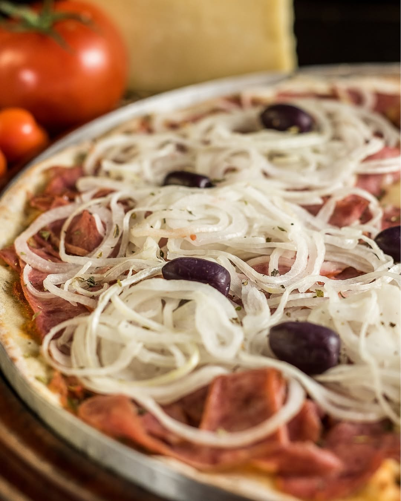

Pastel de Nata
Delicioso doce português com massa crocante e recheio cremoso. Variedade de sabores, como tradicional, Nutella, vinho do Porto, Império cereja, sabor: cereja e coco.

Bacalhau à Portuguesa
A arte da cozinha portuguesa reside na simplicidade elegante. Aqui, o nobre bacalhau, as batatas douradas e o presunto de excelência se unem, harmonizados pelo azeite, em um prato que é um testemunho do nosso respeito pela tradição e pelo sabor autêntico.

Bolinho de Bacalhau
Um clássico de Portugal que conforta a alma. Nosso Bolinho de Bacalhau é a união perfeita de bacalhau desfiado e batatas nobres, frito na perfeição para garantir o exterior crocante e o interior macio e aromático.

Polvo à Lagareiro
O coração de uma tasca portuguesa, servido à sua mesa. Este Polvo à Lagareiro é um prato de alma, robusto e generoso, feito para ser apreciado sem pressa, com o pão ao lado para aproveitar cada gota do molho.

Pizza
Nossa pizza com massa crocante, molho de tomate na medida, e uma cobertura generosa de calabresa, cebola e azeitonas pretas. O sabor que todo mundo ama, com a qualidade que só A Quinta do Marquês tem.